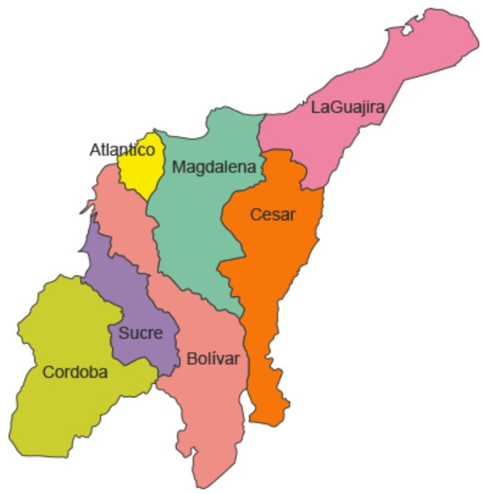

REGIÓN CARIBE
REGION
CARIBE
DE COLOMBIA
 La Región del Caribe colombiana, está ubicada en la zona norte del país y así mismo, está conformada por 7 departamentos, los cuales son los siguientes con sus respectivas ciudades capitales que son a su vez, sus principales centros urbanos:
- ATLANTICO---------BARRANQUILLA
- BOLÍVAR-----------CARTAGENA DE INDIAS
- CESAR-------------VALLEDUPAR
- CORDOBA-----------MONTERÍA
- LA GUAJIRA--------RIOHACHA
- MAGDALENA---------SANTA MARTA
- SUCRE---------------SINCELEJO